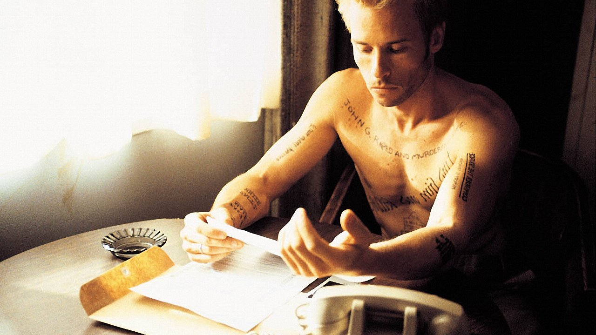

A note about taking notes (part 1)
Note taking and Document Organization

If you are reading this, I'd bet dollars to donuts you already take notes frequently. But, if this is not the case, I am sorry. Not just because you are missing a great opportunity to maximize the production of your brain, but rather because of what you have missed so far. But, don't worry. It ain't late to join the club. The sooner, the better.
I must also acknowledge that this is not a comprehensive guide on note taking, but rather a series of tips that I consider useful. Although, I will not chicken out on sharing my reasons for taking notes, the focus will be on describing how to get the most out of them. I am sharing my experience here and would love to hear about yours. Feel free to ping me in any of the social media platforms, using the links on the home page, if you need, and let me know other tips that have been useful to you. I am looking forward to learning more on the topic!
You can also watch the video:
Why taking notes
There are many reasons why you want to take notes. Some reasons are more rational and aim to contribute to the way we work, even on our personal projects. Some others are more related to our emotions. I'd say that both are important.
This is not an exhaustive list, by any means, but just a list of the ones that are more relevant to me. I have listed them here in case any of them applies to you, but you may take notes for very different reasons, like defensive ones when you work in a hostile environment.
- Create memories for the future
- We are in constant change. My father once shared with me that he kept thinking about himself as the same young guy that he was before I was born. Only when he looked at himself on the mirror, he realized that time had passed. But we don't only change physically, our way of thinking changes too. It is always revealing to read what you thought years ago, how you approached a problem, what were your priorities…
- Enhance the quality and objectivity of the memories
- Although we tend to think that we can clearly remember things, the truth is that most of our memories get blurred and even involuntarily distorted to match some other thoughts we have. This is one of the reasons people keep a diary and also why Guy Pierce's character in Memento tattooed himself 😯.
- Organize your thoughts
- Good ideas don't come organized. Having to write your ideas requires adding some organization to them, deepen your thoughts. It will also help you to find the missing parts of the reasoning and to apply critical thinking with the whole rather than the parts. It is the same process that takes place when you have to explain something that you, allegedly, know to someone. Hence Richard Feynman's saying: "If you want to master something, teach it."
- Create personal resource on the topics that you are interested in
- Nobody will address your interests as well as you do. You will emphasize the things that are more important to you and treat the different parts of it with the right level of depth. Would you want to have a book written for you? Just do it yourself.
- Keep progress for future reference
- A logbook and, even a diary, is just a set of notes that have a specific format and follow a set of rules. You want to have a date for each entry and focus on a topic. You can be more sophisticated and have labels for each entry and separate your logs by subject. The important thing here, is that you can come back to different stages of your progress and understand the evolution. If you include your reasoning rather than just the results, it can save you a lot of effort later.
- Save time
- It isn't unusual to have to do things that are beyond your expertise. And when that happens we either ask somebody for help or learn by ourselves. In any case, you better keep that knowledge in a place that you can use later –hint: that isn't your head–, because if you don't, you will have ask for help or learn it again.
- Avoid loosing your ideas
- I hear often comments of the like: "If only I had an idea for a project, business, special day…". Well, the truth is we have more ideas that we can remember, but we let them get through the cracks of our memory. Why not keeping them when you have them and act on them later. If you still have your idea, you can act on it, extend it, allocate time for it, share it, or dismiss it voluntarily.
- Add checkpoints
- I don't know how many times I have started to investigate about something that I wanted to buy or to do, to grasp a better understanding of the best options or learn the relevant parameters, or just be familiar with the vocabulary. And often, I have done that just to abandon all this works right away. Maybe because I had more urgent things at the moment, or just because I have realized that I need much more time to do progress that what I had available at the time. Still, loosing all this work is preposterous, even when you can find that information again searching on the Internet. Keep what you have and continue from there when you can.
- Fight resource scarcity or excesive abundance
- We freaks have our preferred rabbit holes. Some of them are shared by many people, some others not so much. Finding relevant information about the latter might be very hard, so you better store it when you find it. It might also happen the other way around: some terms are too common and its hard to find the right information. As an example, Google chose "Go"1 as the name of one of their programming languages, to show off that they are the ones that rule SEO2.

Well, as you can see, the lead melody includes investing for the future and preserving and enhancing your assets.
What to take notes about
The answer to what to take notes about is quite simple: everything you care about. The good news is that you can divide and conquer: choose the topics that are more relevant to you now and start with them. You can always extend your scope later. But, if that changes your standards, update them too (more on this later).
Some of the notes I have taken would be worthless for anybody else. Still, more often than not, I find myself happy of having taken notes about many things. But if you want to have some rules of thumb, here are mine:
- If you do something that you might repeat in the future, you should distill the knowledge and capture it. If you are doing something again that requires some knowledge and you don't have a note for it, you must take it now.
- If you are reflecting on something, learning a new thing, or researching on a topic formalize the process by taking some notes. It will improve the outcome.
- If you are involved in a project and want to keep track of the choices you took and its evolution, capture those in its logbook.
Another thing to keep in mind is the validity of the information. Treat your notes as the food you have at home. Things that expire should be consumed sooner. Don't let ideas with a deadline expire. Also some information turns out to be irrelevant very soon and it is more useful if you consume what you have on Internet. For example, what's playing at the movie theaters. It makes no sense to take notes about those.
Summary
This is the first of a series of articles on taking notes. Note taking is a very personal process. What I have written here is just my experience and, as such it may not fully apply to you. But I hope that this is relevant to you and I am looking forward to hear your comments. Please share in any of the social networks that you have in the home page.
In the next article, I will talk about the fundamentals of how to take good notes. The goal of this series is to not just take notes, but getting the most out of them and for that we will build our own AI tool from scratch using AI Optimizer and Toolkit. Get ready!
Stay curious, Hack your code, See you next time!
Footnotes
Contents